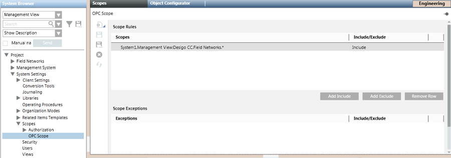

Scope for OPC Connectivity
The default project that comes with the installation does not contain any scope. In order to support OPC DA connectivity, you must add to the project any OPC scopes required for the configuration. For instructions, see Configure the Scopes for OPC Connectivity.

Note that:
- In the Scope for OPC DA connectivity, you can only link points from Management View or Application View of System Browser.
- An OPC scope can be linked to many OPC groups.
When the configuration is loaded, all the data points included in the OPC scope that are visible in Management View or Application View will display in the OPC DA Server tab. In particular, for each data point, the corresponding function data is retrieved in order to define the properties (data point elements) to view as OPC items. For more details about any restrictions, see OPC DA Server Limits.